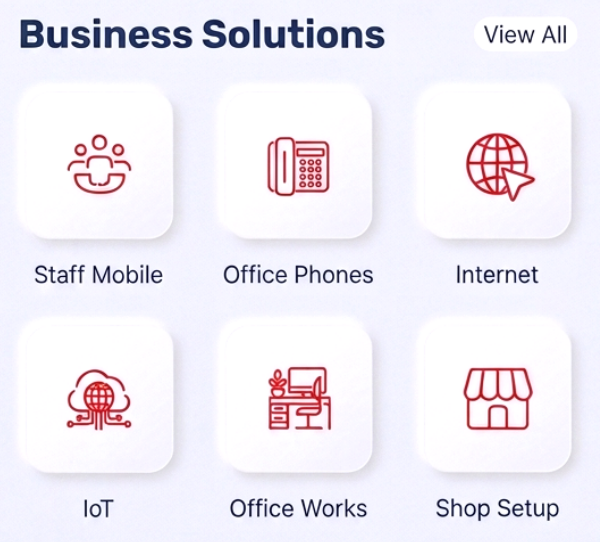
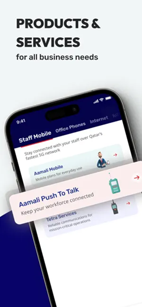
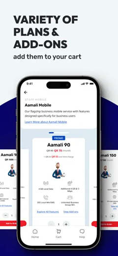
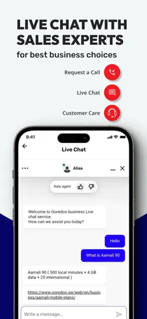
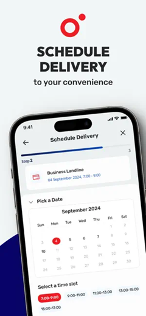
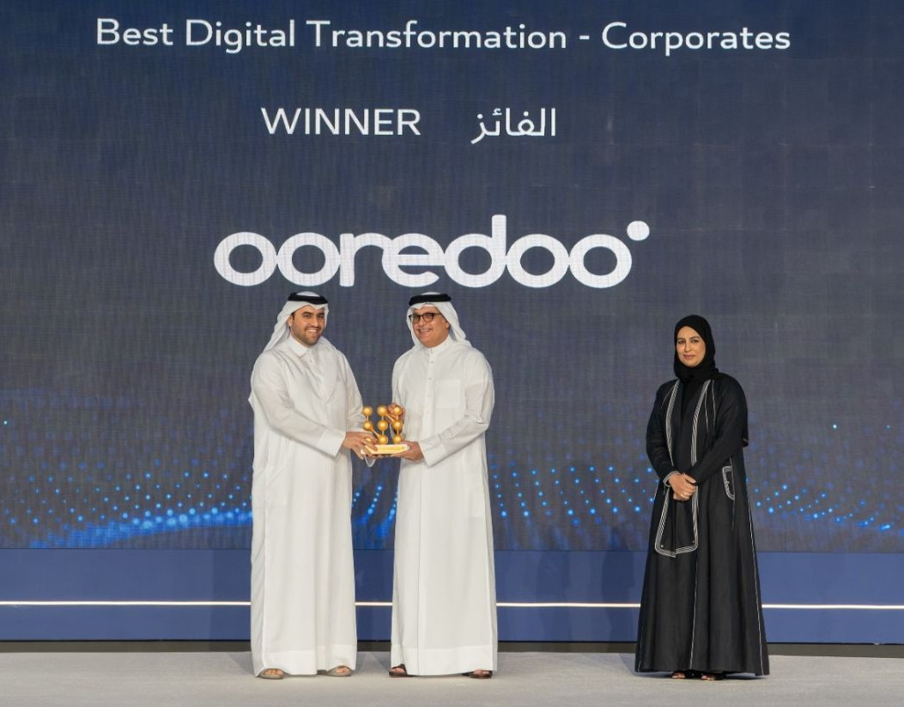

Self-Service Digital Revenue Channel
Conceived and delivered Ooredoo's first B2B digital self-service app, cutting order processing time by 35%, reducing digital orders CAC by 50% (saving sales commissions), and onboarding new customers in hours instead of days. The transformation earned Ooredoo the Best Digital Transformation award from the Ministry of Communications and Information Technology in 2025.
Ooredoo is a fast-paced multi-national corporation offering telecom, cloud, and
ICT services in 13 countries with 100M subscribers. Ooredoo Qatar is the head office
and leader of innovation across the group.
Problem: B2B Business Unit under increasing pressure to modernize the SMB experience
into seamless end-to-end digital service, overcoming constraints and complexities of legacy platforms.
Proposition: Create a flexible digital ecosystem that decouples front-end user journeys
from legacy infrastructure complexities, ensuring frictionless SMB experience.

Strategic Vision & Business Case: Drove cross-functional alignment across
executive stakeholders in Sales, Operations, and IT to define a unified vision, project goals, and MVP
scope. Developed and secured executive sign-off on the Business Case, clarifying the rationale, financial
and market positioning benefits, costs, and project risks.
Digital Catalog & Separation Layer: The legacy Siebel product catalog was a
tangled mess — 3,000+ records, inconsistent attributes, and structural debt that made it impossible
to surface coherently in a digital channel. Restructured the SMB portfolio into six need-based
groupings and built the corresponding digital product catalog and separation
layer on top — decoupling the front-end customer journey from legacy BSS/OSS complexity.
That same restructured architecture became the standard taxonomy adopted across the B2B App, marketing
collateral, sales toolkits, and partner channels — one source of structure powering every
customer-facing surface.

→

Revenue Journey Mapping: Mapped the end-to-end B2B revenue journey — product
discovery, quoting, ordering, provisioning, billing, and customer care — identifying the friction points
at every handoff and sequencing delivery priorities around business value and time-to-revenue.
Stakeholder Management: Managed conflicting priorities across operations, sales, and
IT on what the MVP could realistically deliver given the constraints of the legacy BSS/OSS stack.
Facilitated a structured trade-off session using a value-vs-effort matrix, securing agreement to launch
with automated ordering and manual provisioning as a transitional state — getting the platform live on
schedule while a phased integration roadmap was built in parallel.
Channel Conflict Resolution: The new self-service app competed head-on with the field
sales force, threatening commissions and creating organizational resistance to the launch. Resolved the
conflict by designing two cooperative motions inside the app itself: "Schedule a meeting with
my rep" — a one-tap routing of high-intent SMB customers to their assigned field rep with
full account context pre-loaded; and "Rep-prepared order" — allowing the rep to
configure and price an order in the app, then send it to the customer for review and digital
self-approval. Reps were credited on both motions, turning the digital channel from a perceived threat
into a productivity multiplier and securing field-team buy-in for adoption.
Digital Channel Benchmarking: Benchmarked best-in-class B2B self-service platforms
to define the performance, responsiveness, and UX standards required for digital channel adoption —
ensuring the platform could carry revenue at scale, not just function technically.
Self-Service Revenue Journey Design: Designed the complete self-service revenue
journey in Figma — from product discovery and CPQ/quote generation through online checkout, e-signature
(OTP), and account self-management — validated through customer testing sessions before launch.

Low Fidelity Wireframes
Agile Delivery: Led cross-functional delivery across engineering, QA, UX, and
integration teams — aligning sprint priorities to revenue milestones and shipping the MVP in 9 months,
followed by iterative releases that expanded the platform's self-service revenue capabilities.
Ecosystem Integration: The legacy Siebel product catalog contained 3,000+ records
with data and structure unsuitable for digital channels. Created a new data-driven product catalog
for digital channels. Coordinated integration with Salesforce CRM, billing, digital identity (SSO),
OTP e-signature, and payment gateway. Defined data contracts, API specifications, and end-to-end test
scenarios across systems.
Integrated RAG Sales Assistant: Embedded a retrieval-augmented generative
assistant on GPT-4o directly into the platform — grounded on the live tariff library,
product catalog, regulatory documentation, and the PLM-governed CMS. SMB customers got 24/7 in-app
answers on bundles, pricing, eligibility, and configuration with sources cited back, deflecting routine
inquiries from sales and support and turning the digital channel into a self-guided buying experience.
Pre-Launch & Go-to-Market: Managed a controlled beta with 50 SMB
beta customers to gather final usability feedback with Google Analytics integrated to monitor traffic and
user behavior. Coordinated the GTM strategy with the Marketing team across all channels — App Store
optimization, social media assets, and digital campaigns — ensuring full readiness at launch.




Launch & Results:
Delivered the MVP on time and within budget. In the first quarter post-launch, 10% of new SMB activations
were completed through the self-service app, reducing manual touchpoints and errors, and cutting average
order processing time by 35%. Digital orders CAC dropped by 50% due to
savings on channel partner
commissions, lifting the CAC:LTV ratio, and Customer onboarding time dropped from 3 days to 8
hours.


The team celebrating successful launch
In 2025, Ooredoo received the Best Digital Transformation award from the Ministry
of Communications and Information Technology in recognition of the achievement and the impact on
leading digital transformation in the State.

The platform turned the SMB customer journey from a sales-rep-dependent, paper-bound process into a
self-guided digital motion — compressing CAC, accelerating onboarding, and giving Ooredoo a digital
channel that scales without proportional sales headcount. The Best Digital Transformation award validated
the work nationally; the underlying digital catalog, integration layer, and RAG assistant
remain the foundation for every future SMB digital initiative.
35%+
Reduction in Order Processing Time
8 hours
Customer Onboarding Time vs. 3 days
50%
Reduction in Digital Orders CAC
+30%
CAC:LTV Ratio Improvement
9 Mo
MVP Delivery Timeline